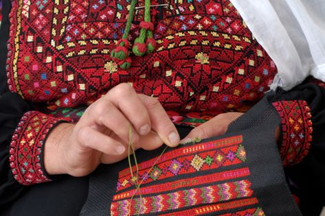
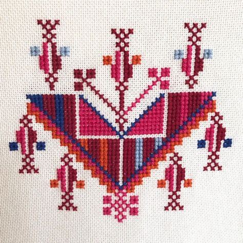
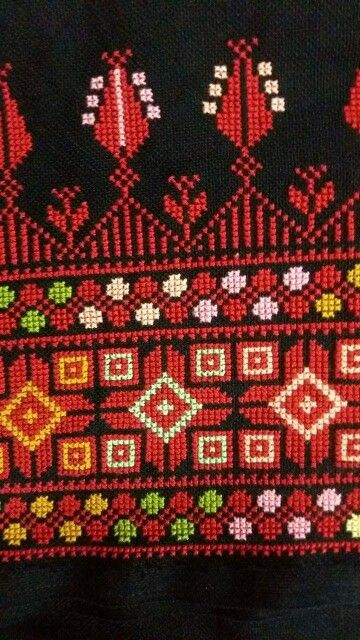
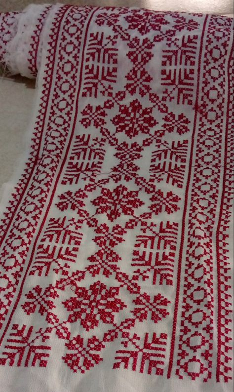
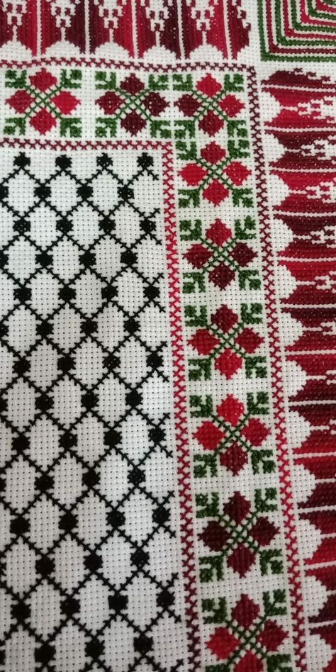

A Legacy Stitched in Time

Ancient Roots
Palestinian Tatreez is a beautiful and ancient form of embroidery that has been practiced for centuries by Palestinian women.
The intricate geometric patterns and vibrant colors are not just decorative; they tell stories about the wearer's family, village, and heritage.

Language of Color
The colors and patterns used in Tatreez can vary depending on the region of Palestine where it is made. For example, embroidery from the southern region often features bold colors like red, green, and black, while embroidery from the north is more likely to use softer colors like blue and yellow.

Versatile Art
Traditionally, Tatreez was used to decorate clothing, such as dresses, thobes (long, loose gowns), and headscarves. However, today you can also find Tatreez on a variety of other items, such as wall hangings, pillowcases, and handbags.

Patience & Mastery
As an art form that has been taught and passed down throughout generations, tatreez requires a dedicated amount of skill and patience, not only in technique but in the deep and personal meaning of each and every stitch.
Some complex designs can take over a year to complete from start to finish.

Symbol of Identity
Tatreez stands resilient, embodying the essence of Palestinian heritage. It serves as a proud symbol of cultural identity, faithfully transmitted through generations. Yet, it also serves as a bittersweet emblem of longing for home among the displaced.
With every intricate stitch, Tatreez weaves together threads of the past and present, transforming each piece into more than just artwork. It becomes a tangible marker of history, an economic asset, a testament to enduring presence, and a powerful political statement.